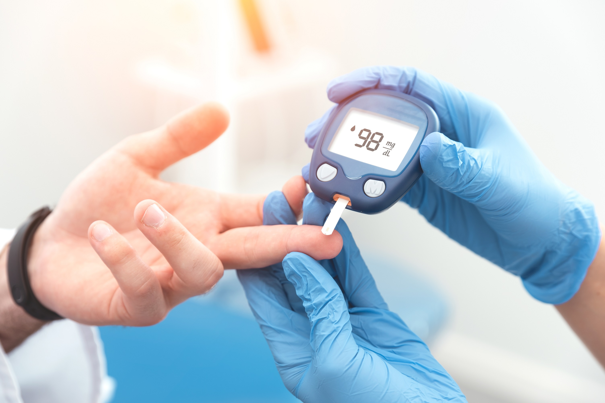
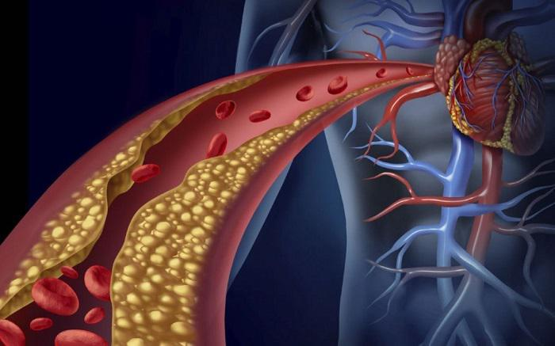
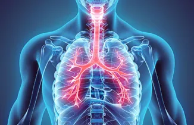

Σακχαρώδης Διαβήτης
Ο σακχαρώδης διαβήτης (ΣΔ) είναι μια νόσος που χαρακτηρίζεται από αύξηση του σακχάρου (γλυκόζης) στο αίμα, που κατά κύριο λόγο οφείλεται στην ελλιπή παραγωγή ινσουλίνης. Η ινσουλίνη είναι μια ορμόνη που εκκρίνεται από το πάγκρεας. Ένας από τους κύριους ρόλους της είναι να βοηθάει το σάκχαρο του αίματος να εισέρχεται στα κύτταρα ώστε να χρησιμοποιηθεί ως “καύσιμο” για την παραγωγή ή την αποθήκευση ενέργειας. Υπάρχουν δυο βασικοί τύποι διαβήτη: Ο διαβήτης Τύπου 1 εμφανίζεται συνήθως σε νεαρά άτομα (αν και μπορεί να εμφανιστεί σε οποιαδήποτε ηλικία). Χαρακτηρίζεται από καταστροφή των β-κυττάρων του παγκρέατος που παράγουν την ινσουλίνη, με αποτέλεσμα να είναι αναγκαία η χορήγηση ινσουλίνης με ενέσεις για να μπορεί το άτομο να επιβιώσει. Ο διαβήτης Τύπου 2 αφορά κυρίως άτομα μεγαλύτερης ηλικίας, συνήθως παχύσαρκα και συχνά υπάρχει κληρονομική προδιάθεση για την εμφάνισή του. Για τη θεραπεία του απαιτείται απώλεια βάρους (με σωστή διατροφή και άσκηση) και χορήγηση αρχικά δισκίων και σε προχωρημένα στάδια χορήγηση ινσουλίνης. Ο διαβήτης της κύησης είναι ουσιαστικά μια ειδική περίπτωση διαβήτη που παρουσιάζεται μόνο κατά τη διάρκεια της κύησης και κατά κανόνα υποχωρεί αμέσως μετά τον τοκετό. Αντιμετωπίζεται με δίαιτα και αν είναι απαραίτητο με ινσουλίνη, ενώ οι γυναίκες που παρουσιάζουν διαβήτη κύησης έχουν μεγαλύτερη πιθανότητα να εμφανίσουν τύπου 2 διαβήτη σε μεγαλύτερη ηλικία.
Αρτηριακή Υπέρταση
Η αρτηριακή υπέρταση είναι η αυξημένη πίεση του αίματος στο εσωτερικό του τοιχώματος των μεγάλων αρτηριών του σώματος. Η αρτηριακή πίεση καταγράφεται με δύο αριθμούς, π.χ. 150/95 και μετριέται σε χιλιοστά στήλης υδραργύρου. Ο μεγαλύτερος αριθμός αποτελεί την «συστολική» πίεση, η οποία είναι γνωστή ως «μεγάλη» πίεση και ο μικρότερος καταγράφει την «διαστολική» πίεση, γνωστή ως «μικρή» πίεση. Αρτηριακή υπέρταση εμφανίζουν τα άτομα στα οποία είτε η συστολική τους πίεση καταγράφεται ≥ 140 χιλιοστά στήλης υδραργύρου, είτε η διαστολική τους είναι ≥ 90 χιλιοστά στήλης υδραργύρου.
Υπερλιπιδαιμία
Η παθολογική κατάσταση κατά την οποία εμφανίζονται αυξημένα ένα ή περισσότερα λιπιδικά κλάσματα στο αίμα (ολική χοληστερίνη, LDL χοληστερόλη, τριγλυκερίδια) ονομάζεται υπερλιπιδαιμία.
Οστεοπόρωση

Η οστεοπόρωση είναι χρόνια πάθηση του μεταβολισμού των οστών, κατά την οποία παρατηρείται σταδιακή μείωση της πυκνότητας και ποιότητάς τους, με αποτέλεσμα αυτά με την πάροδο του χρόνου να γίνονται πιο εύθραυστα και λεπτά. Έτσι προκαλείται αυξανόμενος κίνδυνος κατάγματος (σπασίματος) των οστών, καθώς μειώνεται η ανθεκτικότητα και η ελαστικότητά τους.[1] Τα τελευταία 30 χρόνια η έρευνα πάνω στην Οστεοπόρωση, ξεκινώντας από το μηδέν σχεδόν, σημείωσε αλματώδη εξέλιξη, την οποία πυροδότησε το πρόβλημα Οστεοπόρωσης των αστροναυτών - κοσμοναυτών διαρκείας, αλλά και η συνεχής γήρανση του πληθυσμού.
ΧΑΠ
Η Χρόνια Αποφρακτική Πνευμονοπάθεια (ΧΑΠ) είναι τύπος προοδευτικής πνευμονοπάθειας που μπορεί να προληφθεί και να θεραπευτεί. Η ΧΑΠ χαρακτηρίζεται από μακροχρόνια αναπνευστικά συμπτώματα και περιορισμό της ροής του αέρα.[1] Τα κύρια συμπτώματα περιλαμβάνουν δύσπνοια και βήχα, που μπορεί ή όχι να παράγει βλέννα.[1] Η ΧΑΠ επιδεινώνεται προοδευτικά με τις καθημερινές δραστηριότητες όπως το περπάτημα ή το ντύσιμο να γίνονται δύσκολες.
Αγχώδες Διαταραχή

Η γενικευμένη αγχώδης διαταραχή είναι μία νόσος που συνδέεται με υπερβολική ανησυχία, η οποία μπορεί να επηρεάσει σημαντικά την προσωπική ζωή, την οικογένεια και την εργασία ενός ατόμου. Αυτές οι ανησυχίες σχετίζονται συχνά με ευθύνες, οικονομικά ή την υγεία - τη δική τους ή των οικείων τους.